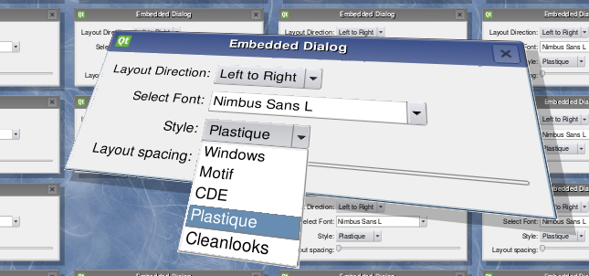

Embedded Dialogs
Demonstrates how to embed dialogs into a graphics view
This example shows how to embed standard dialogs into Graphics View. It also shows how you can customize the proxy class and add window shadows.

Files:
- graphicsview/embeddeddialogs/customproxy.cpp
- graphicsview/embeddeddialogs/customproxy.h
- graphicsview/embeddeddialogs/embeddeddialog.cpp
- graphicsview/embeddeddialogs/embeddeddialog.h
- graphicsview/embeddeddialogs/embeddeddialog.ui
- graphicsview/embeddeddialogs/main.cpp
- graphicsview/embeddeddialogs/embeddeddialogs.pro
- graphicsview/embeddeddialogs/embeddeddialogs.qrc